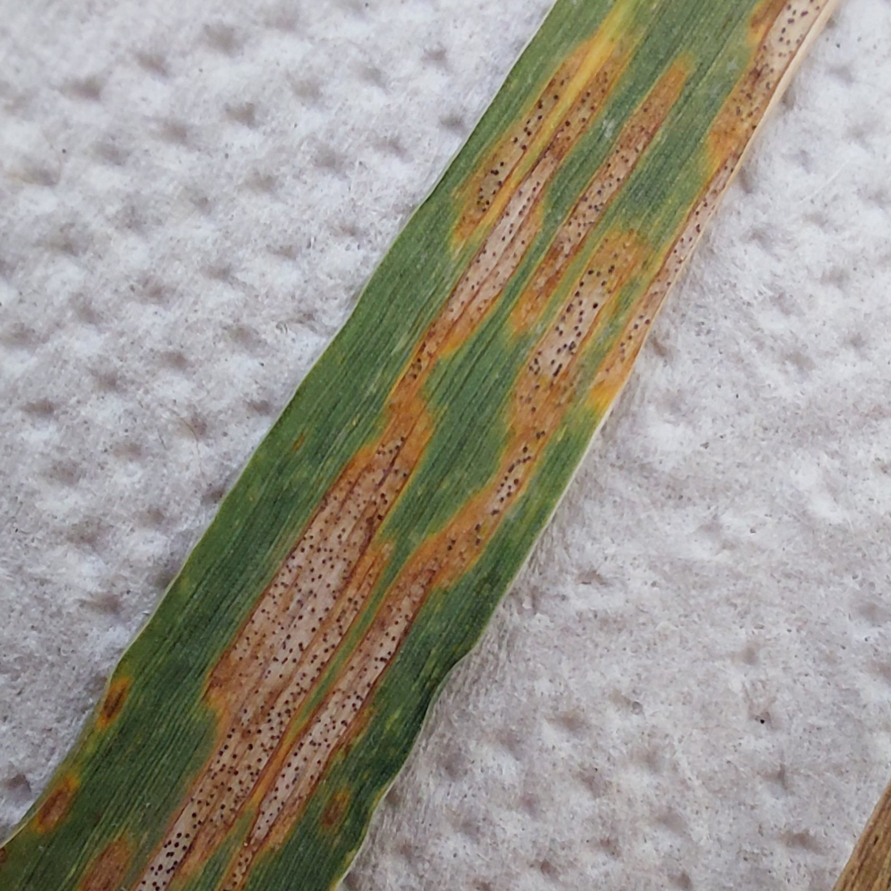
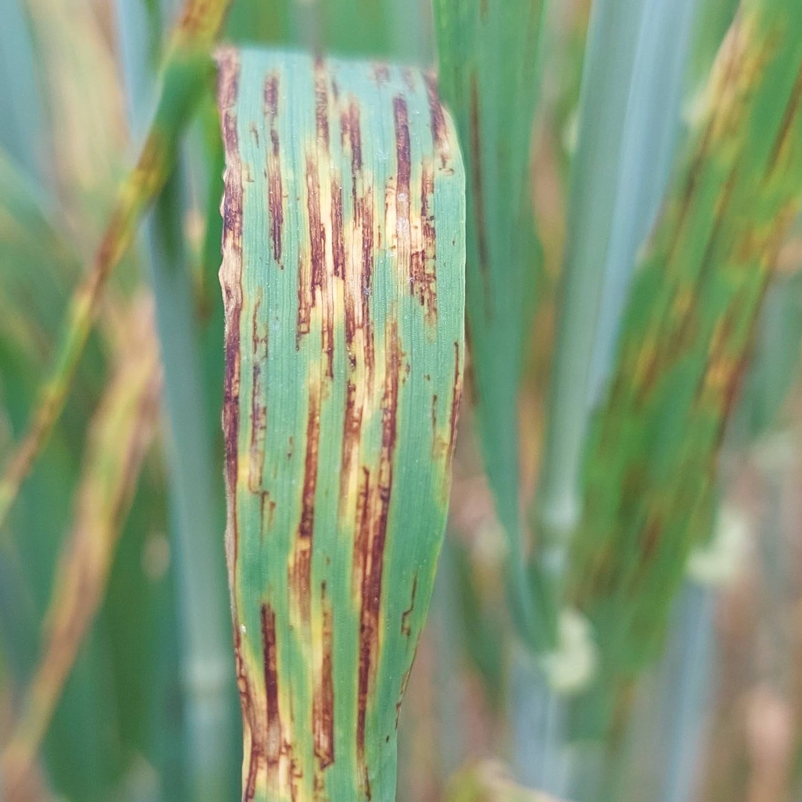

Aastate jooksul võivad taimekaitsevahendid kaotada efektiivsust. Selle põhjuseks on taimehaiguste tekitajate areng, mis võimaldab neil pritsitava taimekaitsevahendi kogusega toime tulla. Maaelu Teadmuskeskuse (METK) taimekaitse töörühm on jälginud kõrreliste helelaiksuse ja odra võrklaiksuse fungitsiiditundlikkuse arengut juba aastaid. Käesoleva kaardi abil teeme kogutud informatsiooni kättesaadavamaks kõikidele huvilistele. Kaart aitab taimekasvatajatel teha teadlikumaid otsuseid taimekaitsevahendite valikul ja uurida toimeaine efektiivsuse muutust ajas.
Mida kaart näitab?
Haigussümptomitega lehti uuritakse laboris. Lehtedest eraldatakse elusad haigustekitajad ning uuritakse katseliselt, kui kanget fungitsiidilahust erinevatelt lehtedelt pärit seened taluvad. Kokku hindasime kahe haigustekitaja: Zymoseptoria tritici (kõrreliste helelaiksus) ja Pyrenophora teres f. teres (odra võrklaiksus) taluvust 8 erineva toimeaine suhtes. Vastavalt toimeaine taluvusele on haigustekitajad jaotatud kolme tundlikkuse gruppi: tundlikud, vähem tundlikud ja mittetundlikud. Haigust ja toimeainet saab valida kaardi parempoolselt paneelilt. Ajaribalt saab valida huvipakkuva uuringuaasta.
Kaardile on märgitud kõige kõrgema taluvusega haigustekitaja, mis antud põllult tuvastati. Klikkides põllu tähisel saab lisainfot testitud haigustekitajate arvu ja nende fungitsiidi taluvuse kohta.
NB. Koordinaadid on 0,5 kilomeetrise täpsusega.